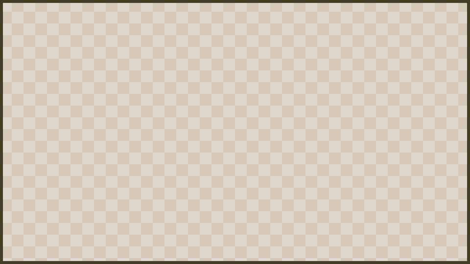

Admin Configuration

ShutterBug is configured through server-side files generated by the plugin. The main files for admins are:
| File | Purpose |
|---|---|
config.yml |
Main plugin behavior, camera defaults, render quality, guide link, paper use, cooldowns, language, and crafting recipe. |
collections.yml |
Photo collection definitions used by albums and collection progress. |
lang/ |
Language files for player-facing messages. |
Recommended Workflow
- Install the plugin and start the server once so default files are created.
- Stop the server before large configuration edits.
- Configure
config.yml,collections.yml, and any language file changes. - Start the server and check the console for configuration warnings.
- Use
/sb reloadfor supported live changes when available. - Test with a normal player permission group, not only with an operator account.
Main Configuration Areas
config.yml covers the high-level options currently exposed by the plugin, including paper consumption, cooldowns, default FOV, shutter sound, render quality, guide link, language, and the camera crafting recipe.
Common admin decisions include:
- whether photos consume paper
- how much paper is consumed per photo or map tile
- default camera FOV and render behavior
- whether to show a public guide link in
/sb help - whether the camera crafting recipe is enabled and what it costs
- localization through
lang/ - whether advanced features should be controlled by permissions

Collections
Define collections in collections.yml. Collections should have clear names and subjects players can recognize. Test every new collection by taking real photos on a staging server or with a small staff group before publishing it as a player challenge.
Reloading
Use /sb reload if your account has shutterbug.reload. Reloading is useful after editing configuration, language, and collection files, but a full server restart is still recommended after larger changes, especially before public events or collection launches.

Backups And Testing
Back up config.yml, collections.yml, and lang/ before major updates. Keep a copy of your working configuration so you can restore it quickly if a collection definition or configuration setting is wrong.